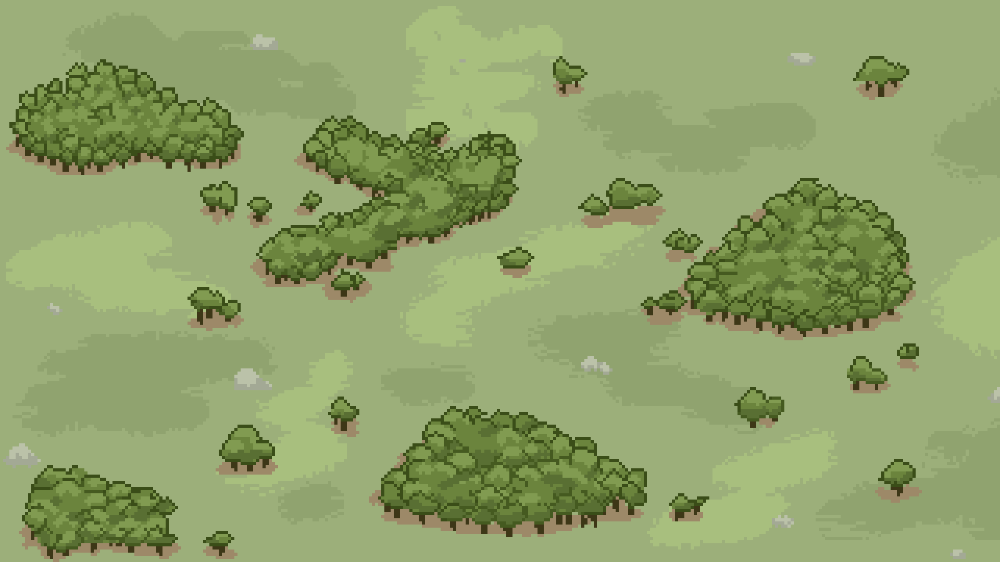

En décembre 2025, j'ai participé à la Nuit de l'Info, un défi de programmation intensif consistant à concevoir un site web complet en équipe, de l'idée à la mise en ligne, le temps d'une seule nuit.
Pour répondre à l'orientation ludique de notre projet, j'ai pris en charge la direction artistique en réalisant un arrière-plan intégral en pixel art, renforçant ainsi l'immersion visuelle et l'aspect 'rétro-gaming' du site.
Contraint par un timing extrêmement serré, j'ai dû concevoir l'élément visuel central du projet en un temps record. Cette illustration en pixel art, véritable pilier de l'identité graphique du site, a été réalisée intégralement durant la nuit, démontrant ma capacité à produire un contenu de qualité sous une forte pression temporelle.
En m’appuyant sur le moodboard réalisé en début de nuit, j'ai pu définir rapidement une ligne graphique cohérente. J'ai opté pour un style épuré afin de ne pas surcharger l'interface, tout en privilégiant des teintes chaleureuses pour créer une atmosphère accueillante sans nuire à la lisibilité du contenu.
